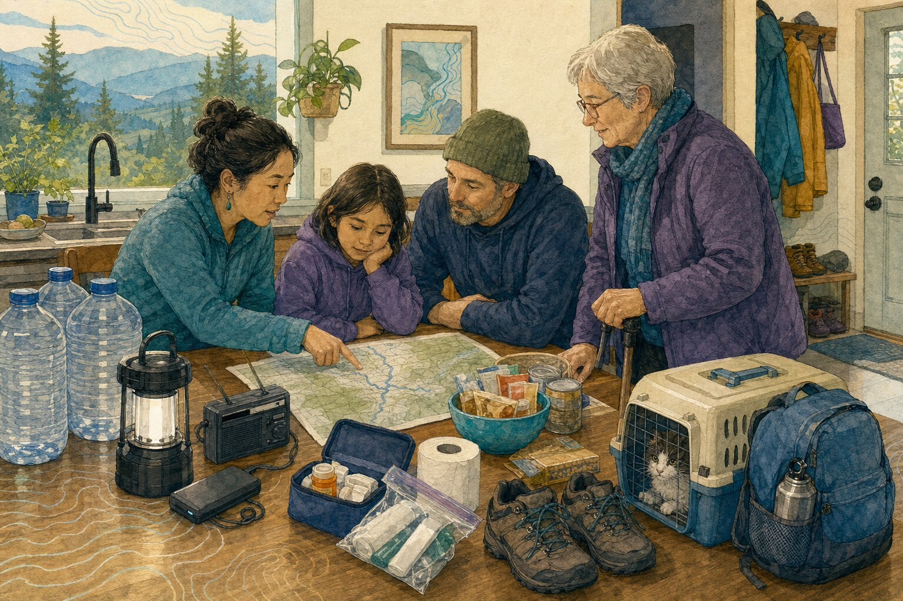

The household workbook
Begin with an ordinary day.
Preparedness begins with the water you drink, the medicine someone takes before bed, the route home from school, the animal who won't enter a carrier, and the neighbor who keeps your spare key.
A public, printable workbook for households across Cascadia · No account required · Reviewed July 15, 2026
Choose a starting pointUse the workbook your way
You don't need to finish everything today.
Start with the four working pages, print a copy, or read the guidance first. Return to the explanations whenever a question needs more context. Nothing you type is saved or sent by Cascadia.me. On a shared device, clear the fields when you finish and keep printed copies private.
Before the bins and bags
A kit is the visible part of a much larger plan.
Before breakfast, a household has already used water, light, heat, medication, eyeglasses, a phone, a kettle, a stairway, a bus route, a pet door, or somebody else’s help. By afternoon, the people who began the day together may be spread across a school, a job site, a ferry, an apartment building, a clinic, and two sides of a river.
That ordinary day is the useful starting point. The goal is not to imagine a perfect household or buy a perfect container. It is to notice what the household quietly depends on and give the most important things another way to work.
Some of that work costs nothing: putting shoes beside the bed, writing a phone number on paper, asking a building manager how the exit works without an elevator, learning which local authority sends alerts, or letting a neighbor know exactly what help has—and has not—been offered. Some of it happens slowly, one familiar grocery item, charged battery, water container, or seasonal layer at a time.
A smaller plan that works is more useful than a large pile no one has tested. Begin with what the household already owns and uses. Then add time, another route, another contact, or another safe way to continue.
Put the household on paper
Write the ordinary day first.
Choose a weekday and name where everyone usually is. Include the child who moves between two homes, the adult who works nights, the person who cannot use the stairs, the service animal who travels with its handler, the cat who hides when the carrier appears, and anyone outside the home whose care depends on this household.
Then follow the day. What must happen before someone can leave? What has to remain cool, charged, dry, unlocked, or close at hand? Which task depends on one person’s memory or strength? Where are the keys, identification, medication list, school authorization, carrier, cane, and weather radio when no one is thinking about an emergency?

A map on the table changes the conversation. The route may cross a bridge that closes in wind, depend on a ferry that stops running, or begin with an elevator. The water may be stored where one person cannot lift it. The neighbor with a key may be away all winter. The bag may fit in the car but not beside a walker and animal carrier.
That discovery means the plan is becoming specific enough to help. The first printable page records the people, places, animals, routines, and daily dependencies that every other page must serve.
Home continuity
Notice what the house quietly does for you.
Water arrives under pressure. Rooms remain warm. Food stays cold. Toilets carry waste away. Phones charge while everyone sleeps. The workbook doesn't assume these systems will all stop together; it asks which one would matter first in this particular home.
Safe water has to be reachable as well as stored.
The U.S. planning baseline is at least one gallon per person per day for three days; PreparedBC uses four litres per person per day. Both include more than drinking. Cooking, brushing teeth, illness, heat, pregnancy, nursing, pets, and service animals can increase the amount.
Quantity is only half the plan. Can each person reach, lift, open, and pour the container? Is some water kept in more than one place? Is the rotation date visible? Stored water and treatment equipment have different limits; follow the container, filter, health authority, and local water notice rather than improvising a treatment method.
A warm room also has to be a safe one.
Choose the room that can be kept tolerable without blocking an exit, vent, flue, or required appliance clearance. Begin with dry layers, blankets, sleeping bags, draft reduction that preserves ventilation, and equipment approved for indoor use and installed as required.
Never use a gas range or oven to heat a home. Never use a grill, charcoal device, camp stove, outdoor heater, engine, or vehicle in an enclosed or partly enclosed space for any purpose. Keep smoke and carbon-monoxide alarms working. Review the room on paper or briefly on a mild day; do not disable medically necessary heat to test a plan.
Know what cannot simply stop.
List lights, phones, hearing aids, mobility equipment, refrigerated medicine, well pumps, electronic entry, elevators, oxygen, and home medical devices separately. A utility medical program may offer notices or other benefits, but it does not guarantee continuous service or first restoration. The household still needs tested backup or an early relocation plan.
Test phones, lights, and noncritical batteries. For medical equipment, use only a procedure approved by the clinician, manufacturer, or device supplier; do not disconnect treatment to discover the runtime. Medication and food have different temperature rules. Follow the medicine label and pharmacist or manufacturer guidance.
If a portable generator is part of the plan, run it outdoors at least 20 ft / 6 m from every building and opening, with exhaust pointed away and working CO alarms inside. Keep it dry and let it cool before refueling. Never plug a generator into a wall outlet. A house connection requires approved transfer equipment and qualified installation.
Familiar food and sanitation draw from the same water.
Begin with food the household already eats, including dietary, texture, infant-feeding, and cultural needs. Favor a first day that needs little water, power, or cooking, and keep a manual way to open what is stored. Outdoor fuel-burning cooking equipment stays outdoors and away from openings.
Hand hygiene, menstrual supplies, diapers, cleaning, dishes, animal care, garbage, and toilet waste can use more water than expected. Sewer, septic, apartment, and rural systems work differently, so local utility or health guidance belongs in the plan. If refrigeration stops, use an appliance thermometer and current food-safety guidance rather than smell or appearance.
Daily care needs instructions another person can follow.
Ask a clinician or pharmacist how to maintain an appropriate emergency supply. Keep a current paper list of medications, doses, allergies, devices, consumables, prescribers, suppliers, and the best way to communicate or provide assistance. Store it securely enough to protect privacy and plainly enough that a trusted person can find it.
Storage limits are product-specific. Food-refrigerator timelines do not determine whether medicine remains safe. Follow the label and pharmacist, clinician, manufacturer, or device-supplier instructions. If care depends on power, cooling, oxygen, an elevator, or accessible transport, decide on the relocation threshold before backup is nearly gone.
Leaving and reconnecting
A household rarely begins an emergency in one room.
The useful departure plan reaches into schools, workplaces, vehicles, ferries, transit, care arrangements, apartment buildings, and neighboring homes. It also leaves enough room for official instructions to change the route.
Every person needs one message and more than one way to receive it.
Cascadia Signals can help you find the official alert program, emergency agency, road or ferry source, weather service, and support resources for a place. Confirm the destination on the publisher’s site. Enroll in the local opt-in alert system where one exists. In the United States, keep Wireless Emergency Alerts enabled; in Canada, know how Alert Ready reaches the devices and broadcasters you use.
Choose a nearby meeting place, a farther destination, and an out-of-area contact who can relay a short message when local networks are crowded. Keep the names and numbers on paper. A rehearsal should always leave at least one working way to receive real alerts and call for help.
The route has to work for everyone who will use it.
Plan more than one route and destination when the geography allows it. Not every household has two roads, a private vehicle, or a place to stay. Record accessible transport, transit and ferry limits, fuel or charging needs, pickup authorizations, building exits without elevators, and the smallest useful load each person can actually move.
Keep medication, mobility and communication equipment, identification, keys, seasonal clothing, and care instructions reachable. Renters and people in multi-unit housing should know who controls utilities, how emergency access works, where the manager’s number is kept, and what help has been agreed if stairs replace the elevator.
Do not shut off natural gas simply because an evacuation order arrives, and never delay departure to work on utilities. Follow an explicit local or utility instruction. If gas is shut off at the meter, do not turn it back on yourself. If you smell or hear escaping gas, leave without operating switches or using a phone indoors, then call 911 and the gas utility from outside.
Everyone who relies on the plan belongs in it from the beginning.
Include school and childcare pickup, feeding, medication, communication, sensory and comfort needs, and a backup caregiver who has agreed and can reach what they need. Disabled adults are participants in the plan, not a generic dependent category; record the communication, medical, independence, support, and transportation details they identify as useful.
Pets need species-appropriate food, water, medication, identification, current photos, records, waste supplies, and practiced transport. Confirm pet-friendly destinations separately. Service animals generally remain with their handlers and need their own food, water, equipment, records, and relief plan.
The household extends past the front door.
Ask specific questions. Who can text after an outage? Who has offered a ride, animal care, language help, a place to charge, or an accessible room? Who has a key, and under what conditions may it be used? What help can this household offer without entering a closed road, downed-line area, floodwater, smoke, or another unsafe condition?
Agreements should be mutual, consent-based, and bounded. Nobody has to disclose a diagnosis to explain a practical need. A missed check-in begins the contact chain you agreed on; it does not require someone to make a hazardous trip.
A twenty-minute rehearsal
Try one ordinary interruption.
Choose no tap water, no household power, no mobile data, or one unavailable route. Begin by naming what already works. Then find, lift, open, charge, carry, or explain the actual thing in the plan.
Keep the exercise safe. Darkness, blocked roads, poor weather, an unavailable elevator, and separation can be discussed or simulated. Don't interrupt treatment, disable essential heat or medical power, drive a risky route, enter an unsafe space, or give up every working way to receive alerts and call for help.
Record one adjustment, give it a person rather than a vague household, and choose a date to look again. The next rehearsal can change the time of day, the person at home, the vehicle available, or the animal that has to move. It does not need to become a performance.
One day, then three, then the local goal.
Make one day work first. Three days is a useful early milestone, not a promise that a major Cascadia interruption will be over. Washington and Oregon direct households toward two weeks. PreparedBC lists at least three days to one week of food and four litres of water per person per day. Follow the goal used by your local authority and the realities of rural, island, coastal, urban, and multi-unit life.
Build gradually. Use the food, clothing, blankets, bags, tools, and chargers already in the home. Add one regular-use item when the budget allows and rotate it through ordinary life. Share only what has been agreed; community depth can reduce storage and cost without making one household responsible for everyone.
The same household, different timing
A bag does not decide the first move.
An emergency kit supports what comes next; it does not choose the first move. An earthquake begins by protecting the body. Fire, flood, or a lahar warning may send the household toward a route. A winter outage or ashfall may instead make shelter, safe air, warmth, and the remaining time inside the home the immediate concern.
Volcano supplies can usually be added gradually while conditions are quiet, although anyone in a mapped lahar area should learn the route in advance. Across every hazard, the same household remains underneath the first action: people, medication, mobility, communication, animals, and agreements already made.
Conditional module · Volcanic ash If ashfall is part of your local volcano plan Open only if an official map or local guidance makes ash relevant to your household.
Ash can travel far downwind, but not every household needs the same preparation. Start with the Volcano guide and the official sources for your place. If ashfall is relevant, add these preparations to the ordinary household plan instead of building a separate kit.
Add ash protection gradually.
- Keep properly selected NIOSH-approved N95 respirators and protective goggles where people can reach them.
- Include medication, animal needs, and a clinician’s guidance for respiratory or cardiovascular conditions.
- Know how to reduce outside-air entry and protect sensitive electronics without blocking required combustion air or exhaust.
- Know how to disconnect rainwater collection or protect a water intake if local officials advise it.
Follow the local shelter and travel instruction.
- Stay indoors when directed and avoid unnecessary exposure.
- Manage windows, doors, fans, vents, heating, and cooling according to current local guidance and the building’s safe operating requirements.
- Avoid unnecessary driving; ash reduces visibility, becomes airborne behind vehicles, and can damage engines and equipment.
- Use respiratory and eye protection when exposure cannot be avoided.
Clean only when officials say it is safe.
- Avoid dry sweeping or other methods that put settled ash back into the air.
- Follow local water, waste, HVAC, roof, vehicle, and equipment guidance.
- Ash can be heavy and slippery. Do not enter an unsafe roof or work area; use qualified help where needed.
- Keep children and animals away from cleanup areas and change contaminated outer layers before entering the cleaner space.
The working pages
A plan you can finish in four pages.
Start with what is true today. If you don't know an answer yet, leave it blank; that blank gives you a useful next step. Keep answers short enough to find quickly. You can type here or print blank sheets. Cascadia.me doesn't save or send your answers.
Start with daily life
Who is where, and what needs to keep working?
Write what is true on a usual weekday. If something has no backup, say so.
Home continuity
How will home keep working?
Plan for the first day first. Add time once the basics are practical.
Leave and reconnect
How will you leave and find one another?
Use names, numbers, and places. A plan helps when someone else can follow it.
Rehearse and add time
Practice once. Improve one thing.
Choose a safe, ordinary interruption. Keep essential care and real alerts working.
| Basic need | Works for one day | Works for three days | Meets our local goal | Where it lives / refresh date |
|---|---|---|---|---|
| Water | ||||
| Food + sanitation | ||||
| Medication + care | ||||
| Light + power | ||||
| Animals + care |
Keep the plan
Let the plan come back when something changes.
This workbook remains public, printable, and complete on its own. If you want a private continuity layer, NowWePlan can track what is finished, who owns the next step, when to refresh it, and what the household has practiced.
Cascadia.me does not transfer the answers entered here. NowWePlan is optional. When conditions are changing, official alerts and instructions come first.
Sources and limits
The workbook supplies questions. Local authorities supply the particulars.
Water notices, evacuation terms, building systems, utilities, transport, medication, medical equipment, food safety, animal access, and assistance programs vary by place and household. Follow the current issuing authority and the professionals responsible for the equipment or care involved.
Reviewed July 15, 2026 · No affiliate links or product rankings
Water and regional depth
Household planning and access
- PreparedBC: Make your emergency plan
- CDC: Personal needs in an emergency
- Government of Canada: Emergency planning for persons with disabilities
- Ready.gov: Make a communication plan
- Ready.gov: Emergency alerts and warnings
- British Columbia: How emergency alerts work
- Ready.gov: Include pets in emergency planning
Medicine, power, and carbon monoxide
Volcanic ash and health
Food, documents, and low-cost progress
Cascadia.me is independently written. Support follows usefulness, never urgency.
Support this work →